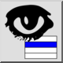

Rādīt tikai Aktīvs
Rīkjosla / ikona:


Izvēlne: Slānis > Rādīt tikai Aktīvs
Īsais ceļvedis: Y, O
Komandas: layershowactive | yo
Rīkjosla / ikona:


Šis rīks paslēpj visus slāņus, izņemot atlasīto (aktīvo) slāni slāņu sarakstā.